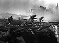

Page index / courses
1941-1950.html
RUSSIA: 1941-1950


The 1940's were eventful years for the whole world. The major event that occurred was the Second World War. The Battle of Stalingrad was the turning point as the Russians repelled the German attack and stopped their advance into Russia. Although the Germans did reach the city, hand-to-hand fighting ensued in the streets. Soviet divisions came to help and encircled the German army. The Russians did succeed, but it was a very bloody battle. For statistics of the battle, click here.